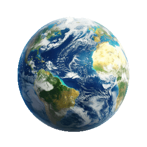

Voce conhece o mundo em que vivemos ?
O Planeta Terra é um grupo de milhões de estruturas de organismos vivos que detém o poder de preservação da vida. A Terra se formou a cerca de 4,5 bilhões de anos atrás, se localiza em meio à Via Láctea, sendo o terceiro planeta mais próximo do Sol e o quinto maior entre todos os planetas que compõem o Sistema Solar.
Denominado também de Planeta Azul ou Mundo, a Terra é o maior entre os quatro planetas mais densos e telúricos. A sua composição se dá por diversos gases, sendo 78% da atmosfera terrestre constituído por nitrogênio, 21% por oxigênio, isso sem falar na composição de argônio. A Terra é conhecida também como Planeta Azul pois, em média, 70% da sua superfície é composta por água. A esse espaço dá-se o nome de hidrosfera (esfera de água). E é justamente a existência dessa substância em estado líquido, junto com o oxigênio, que faz a vida ser possível de existir nesse planeta.
Estrutura do Planeta Terra
Características do Planeta Terra
- Distância Média do Sol: 149.600.000 km
- Translação: 365,2564 dias
- Rotação: 23 horas, 56 minutos, 4 segundos e 9 centésimos
- Temperatura Média: 14 °C
- Diâmetro: 12.756 km
- Satélite Natural: Lua
Movimentos do Planeta Terra
- Recursos naturais da Terra
Curiosidades do Planeta Terra
- A terra é o corpo celeste mais denso do sistema solar.
- A terra tem uma área total em média de 510 milhões de km². 150 milhões de km² são as terras emersas e 360 milhões de km² são de áreas cobertas pelos mares e oceanos.
- O Dia Mundial do Planeta Terra é comemorado em 22 de abril.
- O núcleo terrestre pode atingir temperaturas de até 6.000 °C
- O satélite natural do Planeta Terra é a lua.
- Os oceanos na terra têm uma profundidade média em torno de 3.800m.
- A área do conhecimento responsável por estudar e desvendar os segredos da origem, da evolução, do funcionamento, além de formas de preservação desse imenso habitat natural é a Geologia.
O planeta Terra possui uma estrutura em partes internas e externas, que também podem ser chamadas de camadas da terra. A Crosta Terrestre também conhecida como Litosfera é uma camada externa e sólida que envolve a terra. Ela é composta por rochas, solos variados e grandes quantidades de minerais. A Crosta Continental fica abaixo dos continentes, com espessura média de 72 km e a Crosta Oceânica fica abaixo dos oceanos, com espessura média de 8 km. Os tipos de rochas que existem na litosfera são: as rochas magmáticas ou ígneas – formadas pelo magma, as rochas sedimentares – formadas por ações erosivas e as rochas metamórficas – formadas pelas rochas magmáticas e sedimentares. Já o manto é camada que está abaixo da crosta terrestre e se estende até perto da metade do raio da terra. Ele é formado por vários tipos de rochas no estado pastoso, por conta da alta temperatura. É chamado de magma. O núcleo é a camada mais interna do Planeta Terra, possui temperaturas muito altas e corresponde a cerca de 1/3 de toda a massa terrestre. Acredita-se que sua estrutura seja formada por metais como ferro e níquel.
Rotação e Translação são os dois movimentos que a Terra faz. Quando ela gira em torno de si mesma, do oeste para o leste, dá-se o nome de rotação. Este é o movimento responsável pela determinação dos dias e das noites, e dura 23 horas, 56 minutos e 4 segundos. Já o movimento que a Terra faz, girando em volta do sol, chama-se translação. Este processo é responsável pelas quatro estações do ano e está diretamente ligado ao Solstício e ao Equinócio. Seu tempo de duração é de 365 dias e seis horas e a cada quatro anos, essas seis horas se somam e formam um dia, tornando o ano em questão em ano bissexto.
A formação dos recursos naturais da Terra se dá pela composição de todos os bens que garantem a sobrevivência e a vida no planeta. Esses recursos podem ser retirados da natureza direta ou indiretamente pelo homem para diversos afazeres e finalidades.Recursos Naturais Renováveis – são recursos que se renovam, que não correm o risco de terminar. Exemplos disso são: a energia eólica e a energia solar. Há também os recursos naturais que são em partes renováveis, como a água e o solo que necessitam da ação consciente de preservação do homem para permanecerem disponíveis.Recursos Naturais Não Renováveis – são os recursos limitados por conta do nível de utilização. Exemplos disso são: o carvão, o ferro, o gás natural, o ouro, o petróleo, entre outros